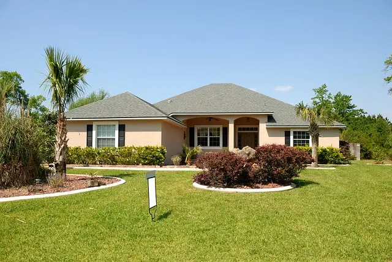
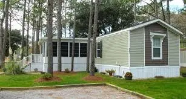

Protect Your Home's Surfaces Safely
Low-pressure soft wash for stucco and siding — eliminate mold, algae and grime without damage
Protect your home's surfaces with our professional exterior wall cleaning. We use a safe, low-pressure soft wash process to eliminate organic growth, black mold, and environmental grime without damaging your stucco or siding.
High pressure can damage your home's surfaces. Our soft wash technique uses specialized cleaning solutions at low pressure to safely remove mold, algae, and stains from stucco, vinyl siding, and more.


Common questions about house soft washing in Orlando
A single-story home typically runs $150–$400 (small/basic near $175–$250; heavy mildew, architectural detail, or 2,000+ sq. ft. pushes toward $400+). Two-story homes run $275–$600 — large homes with significant algae or difficult rear access can reach $600–$700+. Soft washing is the safer approach for stucco, painted surfaces, and siding. Call (407) 499-4773 for a personalized quote.
Pressure washing uses high-pressure water (2,500–4,000 PSI) for durable surfaces like concrete. Soft washing uses low pressure with specialized cleaning solutions to safely clean delicate surfaces like stucco, vinyl siding and roofs without damage.